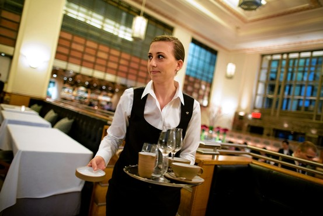
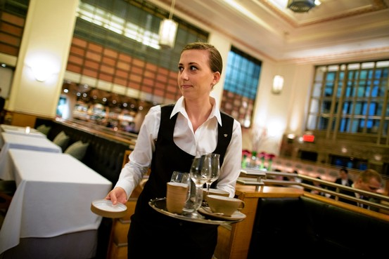

Michael Chung
Coming from a family of musicians, it was only natural for me to seek out a musical medium. Before I even had the physical strength to hold a flute properly, I practiced by blowing into a bottle filled halfway with water, mimicking the mellow vibrations created by a flute. I joined the school band in middle school, grasped the process of assembling the flute parts, and soon realized the true potential of a sublime melody.
However, the instrument did not always ensure a joyful moment. The constant incursion of canker sores was agitating due to an overbite that would arouse pain whenever I played a note. This led me to believe that the path to becoming a flutist was just too painful and challenging due to my bothersome braces. Despite these struggles, the inspiration from my parents and inherent skills and proclivity for musical pursuits made me more passionate to master the flute.
I have participated in the Vision Youth Classical Concert throughout high school, which is part of the Hope Sight Mission Association. Young musicians assembled to perform as a symphony for the visually impaired and raised awareness of their disability. Before the presentation, I would practice the given classical music sheets to produce the pleasant sounds I had come to love since sixth grade. On the day of the performance, the countless hours of perfecting the melody came to fruition, much to the audience’s delight. When I saw the expression of the sightless brighten, I knew that my musical abilities could impact others.
Dedicating my artistry for Sunday mornings, I embodied the songs of faith through a piece of metal. I was able to inspire people during worship with a tone flowing with immeasurable meanings. However, guiding a church member to play the flute on Sunday evenings was the most illuminating experience, as it has expanded my objective. As someone who harnesses musical aptitude, I manifest unity with the flute’s powerful, moving sound. Whatever I had envisioned, I was determined to make it a reality— converting a plain white t-shirt to orange, preparing for school color day. I remodeled the sour patch kids’ box quadrupling all the measures for a math project in middle school, and the creation was nearly indistinguishable as I painted every feature. I received the majority vote on a hand-printed book poster assigned by an English teacher. None of these attributes correlated to an art class, yet the inclination of uniqueness drove my notion to an endless road.
The unconditional love of skateboarding arose in high school, and my friend desperately needed a custom grip tape that involved anime characters. Endeavoring a new motif, the production of euphoria increased as I sensed bumps rising on my arm. I began my research right away. Swiping through thousands of videos on cutting the stencils and applying different hues of paint onto the rough surface, I plunged everything else aside. It nearly left me bankrupt after purchasing all the necessary material, but it was all a valuable struggle. Through numerous alterations of embedding the eyebrow and eyes and changing the colors of the tie, the result was a near-pristine portrait.
It eventually steered to a business where my friend and I co-founded Anik Grip. We established our ambition from buying spray paints and rolls of grip tape to marketing. Consisting of twenty custom grip tapes with four prominent characters, we sold it to people with similar hobbies.
Though I have never taken an art class in my life, my various creative ventures have opened my eyes to the joys and otherness of creating art. These seemingly distinct creative ventures I have taken the initiative on are eye-opening experiences to the pure joy I feel when creating art. The various challenges I struggled through to pursue my passion for making skateboard grip tapes will resonate with me as I continue to express my creativity in the future.
I slowly assembled the silver pieces together for a Christmas commemoration in front of forty people. Sitting at the center of the stage, my arm rapidly trembled as I hoped no one had noticed it. Playing the first note of “Joy to the World,” the sound squeaked. It was a common occurrence as a flutist when more air is embedded into the flow of the instrument. Having five years of experience, the song itself was undemanding, but the eyes of many caused the timid sensation.
Coming from a family of musicians, it was only natural for me to seek out a musical medium. Before I even had the ability to make a sound, I practiced by blowing into a bottle filled halfway with water, mimicking the mellow vibrations created by a flute. Participating in YOLA, a sub division of Harmony Project, I took the bus every week and drove to another city every Sunday to take lessons.
As a younger self, selecting an instrument was inevitable as I already passed by a piano and guitar. However, the instrument did not always ensure a joyful moment. It was something that had to be done instead of doing it on my own will and I lacked the passion of performing in front many people as I attended various concerts throughout my lifetime. I felt anxious with every performance being afraid of making a mistake.
Furthermore, the constant incursion of canker sores was agitating due to an overbite that would arouse pain whenever I played a note. This led me to believe that the path to becoming a flutist was just too painful and challenging due to my bothersome braces. Setting aside these struggles the inspiration from my parents and proclivity for musical pursuits led me to being more passionate to master the flute.
I joined the school band in middle school, grasped the process of operating as an entire orchestra that contained distinct tones and soon realized the true potential of a sublime melody. In high school, I partook in a program called the Vision Youth Classical concert. Young musicians were convened to flaunt their musical aptitude to raise awareness of those who are visually impaired. I was driven to quench the most delightful sound for these people. I repeatedly practiced the same music day and day, trying to perfect the duty that was given to me which was the melody. Many meetings and practices were held, we had to wear ties, a full suite, and the worst part was the necessity of formal shoes. There were only two flutists out of the entire program as violinists packed the seats.On the day of the performance, the countless hours of perfecting the melody came to fruition, much to the audience’s delight. When I saw the expression of the sightless brighten, I knew that my musical abilities could influence others. I was just one individual from an orchestra with more than forty musicians, yet the inclination of musical aptitude drove my notion further.
I have dedicated my artistry for Sunday mornings and embodied the songs of faith through a piece of metal. I was able to inspire people during worship with a tone flowing with immeasurable meanings. However, guiding a church member to play the flute on Sunday evenings was the most illuminating experience, as it has expanded my objective. Everyone has a purpose on Earth, weather is it through music or other professions. I believe just like the musical measures, that my effort can positively impact others and the world we live in.
As someone who harnesses musical aptitude, I manifest unity with the flute’s powerful, moving sound.
"Irasshaimase!” Meaning welcome in Japanese, reverberated across the entire hallway going through the ears of many. It was an obligation of every worker to say whenever a customer strolled into the restaurant. It took me nearly two weeks to accept this regulation.
I worked at a sushi restaurant during the summer and senior year of 2021. As an introvert, consulting with customers was grueling, and it felt awkward greeting people I had never seen before. Mistakes flooded during the first few days, but I was encouraged to adjust to the new environment. I strived to become more competent at the job, covering for coworkers, asking countless questions, and learning from my mistakes.
Regularly encountering new people, my capability of holding basic conversations began to improve drastically. When I spoke to the customers, my deep voice ascended two octaves higher. I was able to make jokes and form an interpersonal network between the customers and even the co-workers as well. With my smiles penetrating through my mask, customers were well satisfied with my service. I gradually refined my vocation and increased my tip percentage from 15% to 50% as fewer mistakes occurred.
During my term, many former workers retired, and new workers began to emerge. I trained different workers each day, taught them the menu, guided them through the steps of waitressing, demonstrated the POS machine's functions, and responded to questions. We quickly formed a camaraderie and strengthened our teamwork. Some customers would lie about their orders having errors, while others were too drunk to communicate correctly. Regardless of these hindrances, we overcame them with our joint efforts.
Having experienced the challenges of the real-world workforce at a young age, I have learned to suppress my fears, commit to my duties, and make significant progress to mentor others through an intimidating process. I intend to implement these practices to my academic journey and march headfirst into rigorous courses and research opportunities at the University of California.In early 2019, my mother was defeated by cancer. The resolute and optimistic person I knew and my closest companion disappeared before my eyes. The beginning of my freshman year should have been the start of a new, thrilling road of my teenage years. However, unknowing my path, I was dismantled from the calamity.
I had trouble talking to other people as I lost self-confidence. I abhorred taking showers because the blank moments only reminded me of the good times with my mother, leading me to feel depressed. I tried to conceal my grief in front of others and forced myself to smile. I doubted the present, believing that she would return and couldn’t accept my mother’s death which I thought only occurred in movies.
The main ingredient that pulled me out of the distressing quicksand was my family. After many months of uneasy family therapeutic sessions, the unuttered convictions I was afraid to share started to spill out. I released the burdensome feelings of frustration due to my unfortunate circumstances and deep sorrow caused by the miseries of losing a loved one. Slowly enclosing my perspective to the blessings in my life, I began to get up on my feet again.
Recovering from reality, I took measures of social welfare, donating my musical ability to those suffering from illness. I have engaged in delivering faith to younger generations, participating as an assistant leader in VBS. I wanted to give back to the community that was the source of many fond childhood memories with my mother.
This life-changing experience has hardened my shell and made me more resilient under harsh conditions. Noticing my dreadful freshman grades, I pursued to achieve better in my sophomore year. I improved my work ethic and persevered through difficult courses. Even despite the lack of my swimming skills, I ventured through the resisting water, which helped to forget about the world outside the pool. This life-changing experience has hardened my shell and made me more resilient under harsh conditions. I will hold the values that my mother has taught me close to my heart and continue to mature under her watchful eye until the day I see her again.
Experience
Server
• Worked a sushi restaurant as a server
• Also worked with the POS machine
• Good communication with other workers and customers
Cashier
• Helped students to accomplish work ethics
• Assisted younger studenst with math
Teaching Assistant
• Helped teachers to organize books
• Reviewed and graded student homeworks
• Created a better enviornment for students
Education
UC Riverside
University of California Riverside
University of California Riverside
Portfolio



